As it has been for the past six or so years and always shall be, the secret cabal of skateboarding luminaries over at Quartersnacks ever continues to issue forth their weekly hierarchical selections of the dopest skate clips. Thus is decreed the Quartersnacks Top Ten. Who’s up?
Just as reliably the diligent spreadsheet jockeys at 4Ply Magazine transcribe every clip, every name, and every obstacle. And then, with a magical keystroke, the data gets queried. Disks spin and lights flicker and from within the heaps of strings and boolean values a picture of the past year in skateboarding emerges. Thus is decreed the 4Ply Analysis of the Quartersnacks Top Ten.
So put on your reading glasses and get ready for a lot of statistics-based fun and excitement.
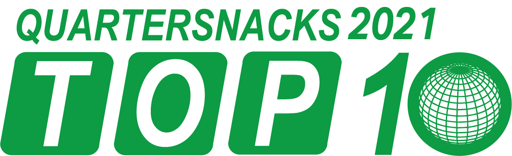
DATA & METHODOLOGY
There were 50 #QSTop10 countdowns in 2021, so this resulted in 500 rows of data, 1 for each clip. We recorded the skater, trick, obstacle, and spot as well as frequently occurring phenomena like replays, slow motion, slams, and other noteworthy details. You can review all 9000 points of data in the set here.
Like last year, we also employed a weighted “Points” metric for each entry based on its rank within that week’s countdown. For instance, a trick ranked #1 would receive 10 points, #2 receives 9 points, #3 gets 8, and so on.
We logged if a clip was a line, however for the purposes of this analysis only the most significant trick of the line was included in the data. If a rapid sequence of ‘quick footed’ tricks was of consequence, it was so noted and the entire array was logged as 1 trick.
As a bonus, we now have datasets for two years' worth of countdowns so we can compare the 2021 results to 2020. If anybody wants to volunteer to retroactively log the #QSTop10s from the 2010s, hit us up.
As always, we do our best to correctly identify stances and spots and whatnot. Contrary to popular belief, we are not sentient robots and might occasionally get the call wrong. Please feel free to contact us with any corrections.
MOST APPEARANCES & POINTS
The primary question all this data can answer is “Who is the #QSTop10 Champion of 2021?” TLDR: It’s Tyshawn.
Of the 500 slots available, there were 381 different skaters making appearances. 79% of the skaters in the countdown only made a single appearance all year. Of the 80 skaters who made multiple appearance: 58 appeared twice, 11 appeared thrice, and 11 superstars appeared 4 or more times:
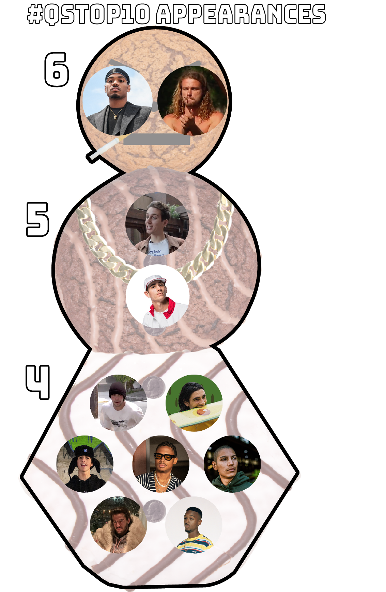
Tyshawn Jones, along with Provencial dark horse Victor Campillo, occupied the top tier by being present in the countdown 6 times each . Suciu and Shanahan racked up an impressive 5 appearances, and 7 dudes made it in 4 times.
Special acknowledgment goes to Louie Lopez, Antonio Durao, and Shanahan for making the Top Appearances list for 2 consecutive years.
While any appearance is to be celebrated, not all appearances are equal. Utilizing our weighted Points metric, a slightly different picture of 2021 dominance is created:
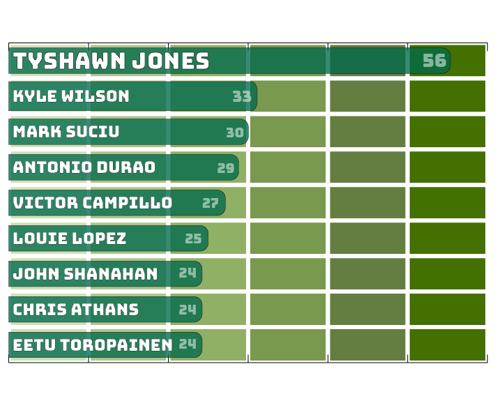
Victor Campillo drops into 5th place in points, as he typically hit around #6 in the countdown. Conversely, Kyle Wilson hit the #1 spot twice (and #2 once) in his 4 appearances, boosting him up to 2nd place in points. Eetu also benefitted from frequenting the top 3.
And, as he does, Tyshawn went big every time. All 6 of his appearances in the countdown were Top 3 placement: He hit the #1 spot 3 times, #2 spot twice, and #3 once! By this quantification, Tyshawn had an even better year than 2020 SOTY Mason Silva did last year, when Mason scored 55 points in 6 #QSTop10 appearances.
Which brings us to the inevitable SOTY to #QSTop10 comparisons. Like Lucas Puig last year, both Jones and Campillo we’re all over Quartersnacks all year long yet didn’t even make Thrasher’s long list of 31 SOTY contenders. Why is this?
Quite simply, Tyshawn dropped heavy tricks through social media and Campillo released his parts through mostly European skate media outlets.
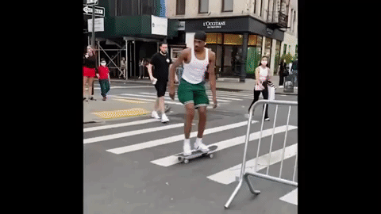
TOP TRICKS
When counting the instances of specific tricks, 4Ply takes into consideration the sum of all the components of the trick. For example, a tasteful backside 5-0 grind to frontside 180 out is logged as a distinctly different trick than a backside 5-0 grind to backside 180 out (which, of course, lacks taste).
Thusly, when observed as one complete dataset, the diversity of tricks in the 2021 #QSTop10 was huge. Of the 500 tricks logged, 362 tricks were unique. That’s 72%.
Of these unique tricks, 301 were only seen in the countdown once, 31 tricks happened twice, and 12 happened thrice. The chart below shows the Top Tricks done 4 or times this past year:
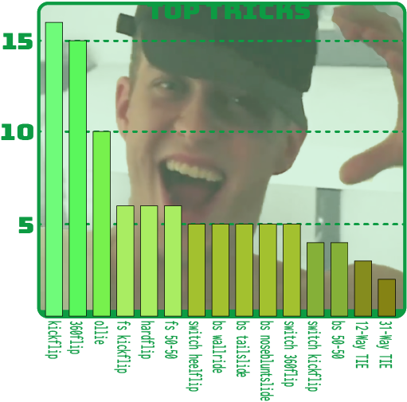
With such specificity to trick tracking, it should come as no surprise that the tricks getting the most hits are simple moves that get attention not for complexity or ingenuity but style and buck-ness. Tech tricks get into the countdown often, but the very nature of them being tech usually makes them unique and thus, happening only once.
Honestly, this is typically the case any time we count tricks within a dataset. In fact, this 2021 #QSTop10 Top Tricks chart is one of the few instances in all of our skate-data surveys where Ollies didn’t top the list.
But we’re not satisfied to just tell you what tricks happened most often. You’d better grab another beer and get comfortable, cause we’ve got lots of “interesting” trick observations to share:
- 20.4% of tricks were done switch or nollie, which is up from 16.3% the previous year.
- The skater with the most switch/nollie clips was Antonio Durao, who went "opposite footed" in all 4 of his clips.
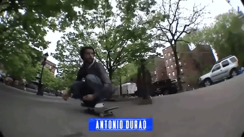
- Tricks that start switch: 65
- Tricks that start with a nollie: 36
- Tricks that start fakie: 33
- While straight on regular stance kickflips were the top trick of 2021 with 16, there were also 18 kickflips into other tricks and 7 kickflips out of tricks.
- 15 tricks were straight-up 360flips, but 31 tricks involved a 360flip.
- Hardflips: 6
- Nollie Hardflips: 2
- Switch Hardflips: 1
- Fakie Hardflips: 0
- "Double" Grinds: 1
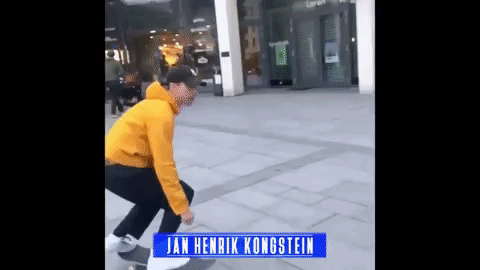
- Backside Wallrides: 5
- Frontside Wallrides: 1
- Tricks incorporating some kind of Wallride: 22
- Tricks incorporating some kind of Wallie: 17
- Sum of all Blunts: 40
- Most common blunt: bs nosebluntslide (5)
- Number of bs nosebluntslide variations: 11
- 46.6% of tricks logged contained a ‘backside’ element while 32.8% of tricks contained an element of ‘frontside’, an 8% smaller gap than 2020.
- There were 6 slappy tricks in 2021, although it can be hard to determine when a slappy ends and a wallride into a grind begins these days.
 (FYI, we logged this as a switch frontside wallride to switch frontside 50-50)
(FYI, we logged this as a switch frontside wallride to switch frontside 50-50) - Drop Ins: 8
- Ride Ons: 4
- Nosebonks: 2
- No-Complies: 1
- Bonelesses: 1
Our computer nearly overheated attempting to determine which tricks could be labelled “Most Complicated” by quantifying the number of times we had to utilize the phrase “to” when logging the trick. The inclusion of ‘quick footed’ no-setup trick sequences as a single entity complicated the Most Complicated computation. Indeed, 18 clips were of the quick-footed variety.
That being said, we are fairly comfortable proclaiming Alexis Lacroix’s “switch frontside 180 to manual to frontside noseslide to backside 270 revert to manual to backside 180” the most-complicated-to-name trick of 2021.
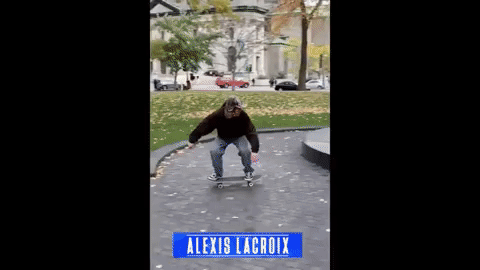
OBSTACLES
So what terrain do the tribunal of judges at Quartersnacks fancy? Check the pie-chart for the official obstacle breakdown.
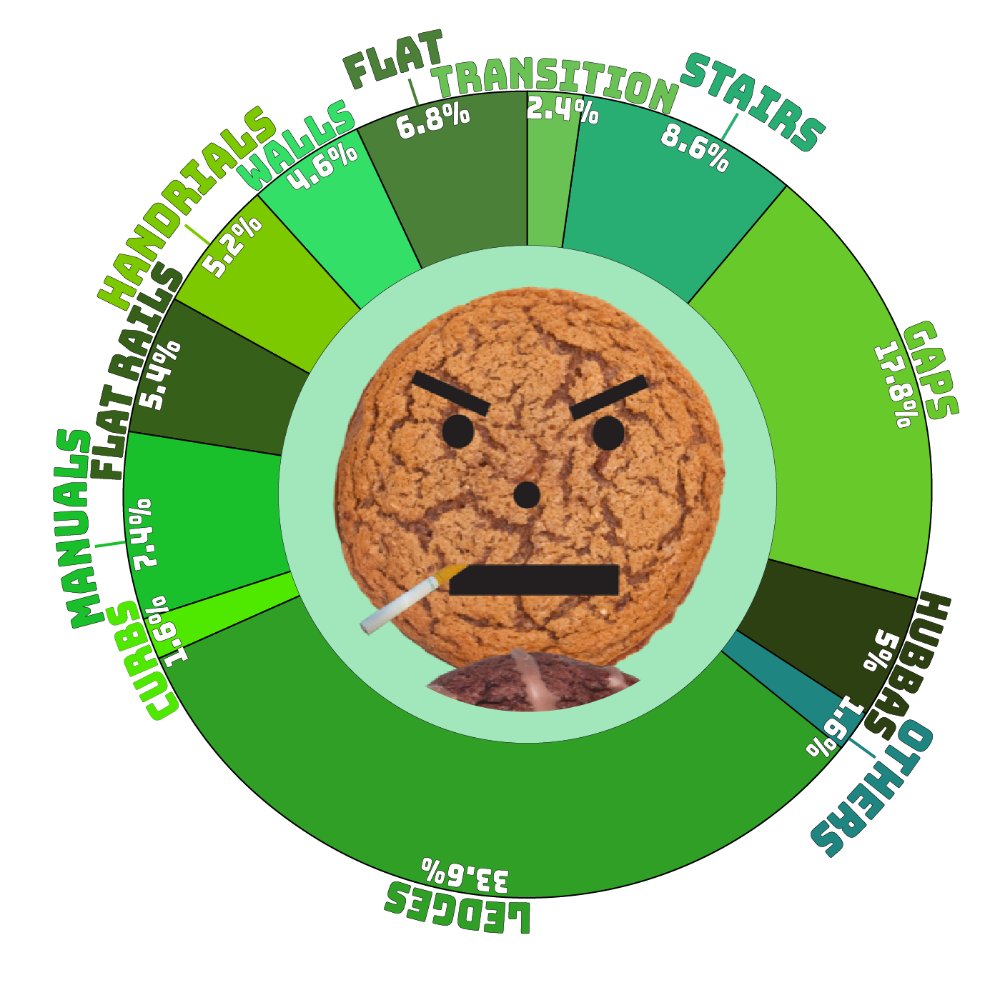
It is interesting to compare 2021’s Obstacle chart to the non-spinning chart from 2020 and see how similar they are. In fact, a bunch of the obstacles were the same as last year to within a fifth of 1 percentage point (0.2%)! Ledges are up a bit (especially considering we separated Hubbas from Ledges this year), Flatground is up about 2%, Rails are down slightly, and Curbs are also down. But Manual Pads, Walls, Stairs, and Hubbas (when calculated for 2020) are seen in nearly the same quantities.
The only real notable move would be Transition skating, which dropped nearly in half to a trifling 2.4%. That’s only 12 transition tricks all year, and 3 of those were on street quarters. To hammer it home even more, there was only one trick in a vert ramp… and it wasn’t even really a transition trick!

Some other Obstacle Observations (or "Obstavations"):
- 48 tricks were over things; Mostly rails and bars (24), but also barriers (5), trash cans (5), Pier 7 blocks (2), and a lot of boards side by side on flat (1).
- 18 tricks were on horizontally curved ledges and rails
- There were 12 significant "Up" tricks; 6 up stairs, 4 up ledges or hubbas, and 2 up handrails
- 32 tricks were into serious banks, including 7 tricks over rails into banks
- There were 2 tricks on trees
- There were 2 tricks on cars
- There was 1 trick over a hydrant and also 1 trick on a hydrant.
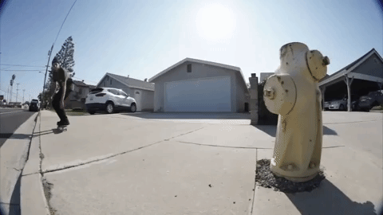
- There were 27 tricks on what we defined as "Crazy Obstacles" - that's 1 more than 2020
- There was 1 trick on construction debris
- There was 1 trick on a construction vehicle
And even more popular than last year, there were 97 tricks (19.4%) involving combined-obstacles. Like gaps into an obstacle (17 counts), gaps out of an obstacle (also 17 counts), or stuff like Reese Barton's deciptively simple seeming wall to gap to rail to bank.
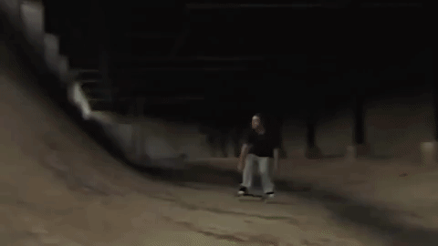
LINES
For our purposes here, a line consists of 2 or more sequential tricks. Note that after-hammer flatground tricks / hill bombs are not necessarily indicative of a line. Lines of significant length (5 tricks or more) were noted, but powerslides and ollies up curbs were not included in the trick count. As clarified in the Methodology of this article, 4Ply only recorded what we considered to be the standout trick of the line.
The #QSTop10 contained 160 lines (32% of all clips). Every single countdown contained at least 1 line, and 10 countdowns had lines for at least half the clips. The most lines in a weekly countdown was 7, which happened twice.
While Victor Campillo scored 4 lines in his 6 appearances, the true Lord of the Lines for 2021 was, of course, Chris Athans. When it came to countdown appearances, Chris was never not skating lines (4-for-4). He also had the second longest clip of the entire countdown, a 28 second 5-trick line in the SF Hills.
We should note that Joey O’Brien had two different lines highlighted for the same #1 slot back in July.
And we can’t talk 2021 Lines without mentioning Tom Knox. Tom, as he did last year, scored the longest line with a 9 trick jaw dropper, which was also the longest clip of 2021 at 38 seconds.
RUN IT BACK TURBO
Watching a trick multiple times was quite popular in 2021, with Replays (either 2nd angles, a replay in the original video source, or replayed by QS) happening 39% of the time. In May, there was a countdown with 8 clips containing a replay! The skater who was replayed the most was Ishod Wair, who had tricks run back in all 4 of his clips.
The rare Triple-replay was a little less rare than last year, as that happened 23 times, a 65% increase over 2020. This includes Chima’s chart-topping double-triple replay.
And now, introducing the Quadruple-replay, which happened on 3 occasions.

Intertwined with Replays are clips that contain an element of Slow Motion, which happened 163 times (32.6%). Every week had at least 1 slow-mo clip, and Week 2 in January had 8 instances of slow-mo!
The slow-most skater of 2021: Louie Lopez, with 3 instances.
SPOILER SOURCES
Where are the omniscient watchers of Quartersnacks typically pulling footage? We're glad you asked.
It took a few extra silicon chips, but we programmed our computers to sort out the source of every clip in the countdown. With these added columns, we give you the Spoiler Source breakdown:
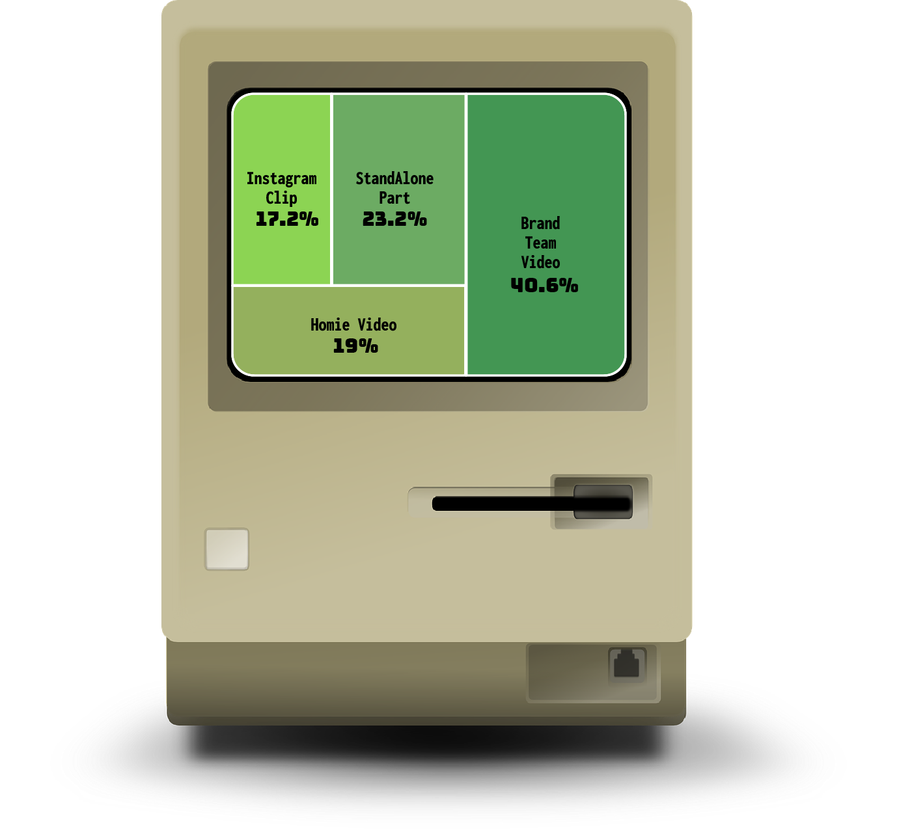
Instagram, ever the source of constant skate content of varying quality, seems to be slipping a bit in popularity. 86 clip came from Instagram in 2021, which was down 4.4% from the previous year. That being said, Tyshawn ruled the ‘gram with 4 clips coming from IG, including three #1s and a #2! Deedz also influenced through socials with 3 of his 4 clips coming from Insta. We’re happy to report that zero clips came from TikTok.
Of the 82.8% of tricks that didn’t come from your phone, 116 clips came from stand-alone single skater parts. That leaves the bulk of skating (61.6%) coming from ‘team’ videos of the full-length or nearly full-length variety.
From these 298 from-team-video clips, 203 of were from ‘brand’ videos, and an impressive 95 clips came from independent ‘homie’ edits.
What videos racked up the most hits? Well, Bronze’s The Reuben and Limosine’s Paymaster videos each had full countdowns dedicated solely to them, so they each had 10 clips. Let’s see who else did well:
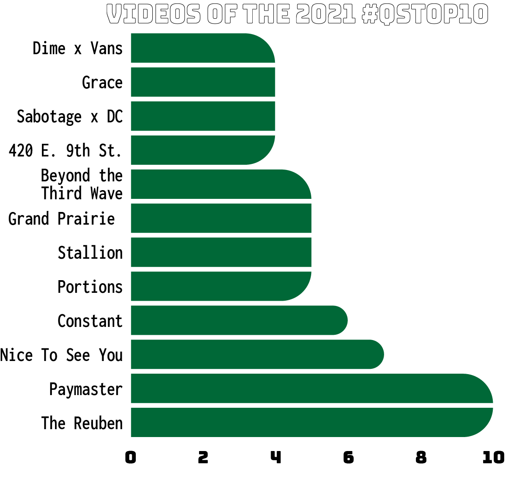
When we combine the results from separate videos by the same brand, a different story emerges of what brands were getting the most #QSTop10 bump in 2021:
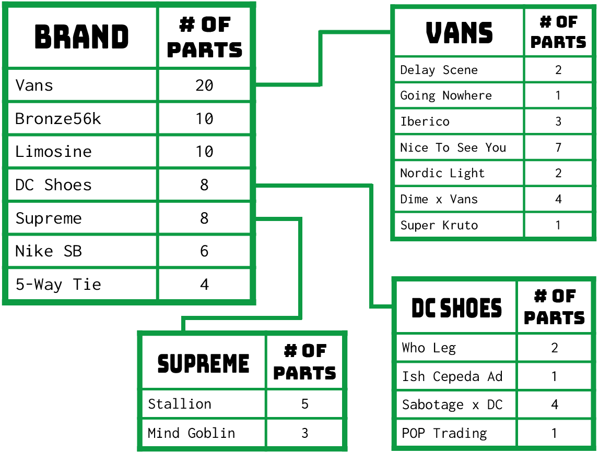
Brands like Supreme, DC Shoes, and especially Vans leveraged multiple video releases to get in front of your eyeballs. Is seven different video releases too many from one brand?
According to Quartersnacks… no. No it isn’t.
TOP SPOTS
Despite upgrading from dial-up to DSL, the 4Ply algorithm still can’t seem to artificial-intelligently identify every skate spot worldwide. Nevertheless, we are fairly confident we were able to correctly record most well-known spots. In an attempt to see where the cool kids roll and just how great the New York bias is in effect, let’s go to the chart:
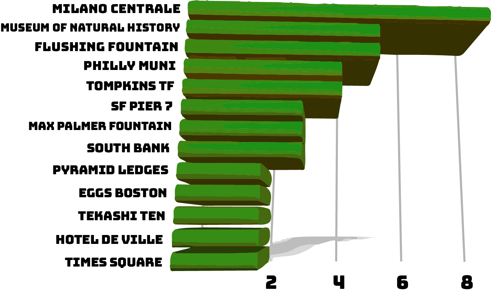
Even taking into account that there were a couple other 2-hitter spots we didn’t illustrate here, this stack gives us a fairly accurate portrait of the popular spots. Once again, the irresistible ledges of Milano Centrale in Italy sit atop the list with 8 clips. Also repeating at the top of the list as the most clipped spot in NYC is the (apparently bust-free) Museum of Natural History.
The stench of New York is all over this list, with the Flushing Fountain also netting 5 tricks, Tompkins TF getting 4 clips, and all your other Big Apple favorites in the mix at least once or twice (Blue Park, Pyramid Ledges, Zuccotti, Tekashi, Times Square ledges, that round bench that looks like a nipple coming out the ground, Blubba, etc.). Max Palmer Fountain was the location of 3 clips, but shockingly only one was by Max Palmer.
While we’re here, let’s note that we counted 72 NYC clips. That 14.4% - a 3.4% raise from last year. The all out king of New York was Antonio Durao, who went all city with 4 out of 4 NY clips. Also living for the city with 3 NY clips each was Tyshawn, Shanahan, and Famous Trucks Max.
We gotta mention the Philly Muni scene going hard in 2021 (amazingly only 1 of the 4 clips coming from the DC x Sabo video), the feel good resurrection of Pier 7 in SF, London’s South Bank, Eggs in Boston, the Los Angeles Mall, and Hotel de Ville in France.
Some old favorites also got a clip or two this year like the Afro Banks, Pulaski Park, Sants, Jarmers, Stalin Plaza, the Challenger Triangle in Florida… we’re stoked to report a lot of the hits were still being played in 2021.
- At least 8 clips took place while bombing the hills of San Francisco. 3 of those clips were Chris Athans.
- 7 clips were filmed in concrete outdoor parks. That's less than half of last year's total.
- There was 1 trick in an abandoned waterpark.
- There was 1 trick inside a skate shop.

OTHER OBSERVATIONS
And we have a lot of them...
- First and last trick of the year (week 1 #10 and week 50 #1) were both in the Max Palmer Fountain.

- 14 tricks were by skaters who identify as women (2.8%). Up from 7 last year. We apologize if we missed or mis-identified anyone.
- Woman with the most appearances: Maite Steenhoudt with 3. Nika Washington appeared twice.
- Highest ranked trick from a woman: Breana Geering got to #3 for a switch kickflip line.
- Once again, there was just 1 self-filmed clip all year.
- There were 13 EA Skate 3-style “combo” tricks.

- Lucas Puig appeared in shorts and no shirt just once. He also appeared wearing long pants and a hoodie, which just feels wrong.
- Josh Bos made it into the countdown twice in the same week, the first time this has happened in years, by means of being mis-identified on one of his tricks.
- There were 29 Slams shown in the countdown.
- There was 1 trick done on ice.
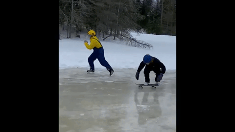
- There was 1 trick done in the rain.
- 1 trick came from an ESPN X-Games Real Street part.
- 2021's Most Dipped:
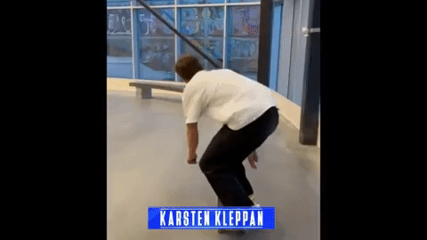
- Most common name in the 2021 countdown: Kevin, with 8 skaters. This is including Kevin 'Spanky' Long.
- Most popular first letter of a skater's first name was by far "J" (45). This does not include Justin Figueroa, whom was logged as “Figgy”. Next most common was "A" (32)
- Most popular first letter for a skater's last name was "B" (42). Next was "S" (34).
- There were 3 skaters with an “O’” in their last name. There was also 1 skater with an “O’” in his first name.
- There were 7 skaters with a "Mc" in their last name.
- The average #QSTop10 countdown length is 2 minutes 17 seconds. The longest countdown was 2 minutes 58 seconds. The shortest was 1 minute 43 seconds.
- There were 2 in memoriam tricks in 2021 (RIP Henry Gartland & Max Van Arnem).
BUT WAIT, THERE'S MORE
The tastemakers at Quartersnacks blessed us not only with 50 weekly countdowns in 2021, but then they went and gave us an overall Top 10 for the entire year. Utilizing relational database queires, we cross-referenced this year-end recap to see what kind of thinly tethered observations we could use to make this article even longer.
The results may shock you.
We completely expected the Top10 of 2021 to be drawn from tricks that were ranked #1 in their respective weeks, but twice a #2 trick made it into the finals!
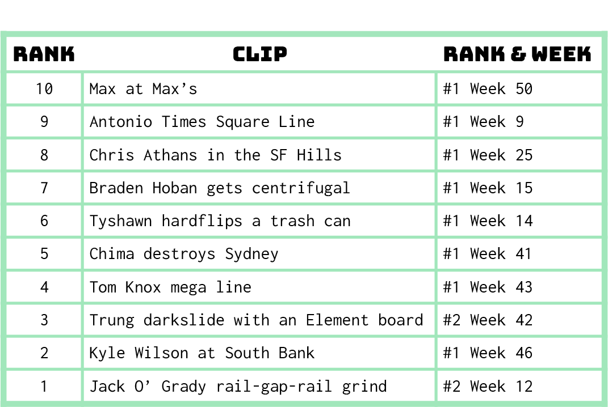
Wait, what! The top trick of the year wasn’t even the top trick of its week!
Two tricks that ranked #2 in their weekly-countdowns ended up being the #3 and #1 trick of the whole year! The tricks that outranked them in their respective weekly countdowns didn’t make the final countdown at all!
We chalk this up to the rare but very real power of a trick to gain status over time. While after-black hammers galore get forgotten nearly instantly, occasionally a trick grows in power and eventually a Josh Kalis mid-line flat ground trick at the Seaport is referenced more often than Jamie Thomas' ender from Welcome to Hell. And this is what is happening to Trung’s darkslide (and accompanying outfit) and Jack O’Grady’s rail-gap-rail grind (which was recently declared the $10000 Trick of the Year).
And on that thrilling note we leave you to spend some time rewatching the countdowns, furrowing your brow in a vain effort to quantify it all, and raising your eyes towards the heavens to ask why, oh why, should you care.
Until next year: make sure to follow Quartersnacks to keep abreast of all the latest #QSTop10 action: @quartersnacks.
And consider getting all your statistical skateboarding needs fulfilled at @4plymag.